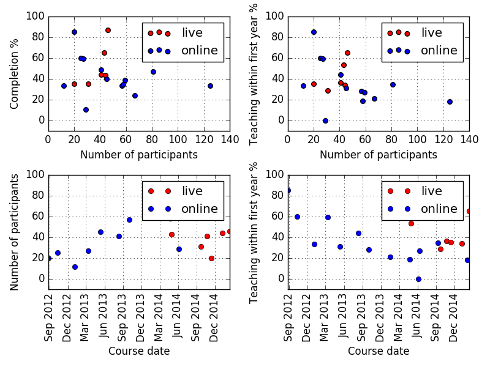
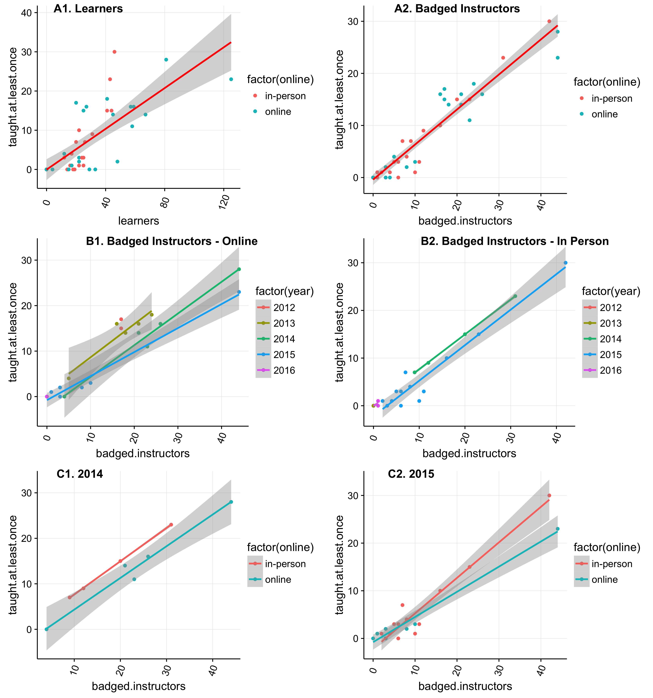

Correlations
We've run instructor training both online and in person for several years, so it's time to look at how they compare. The raw data shows:
- the event's start date
- its unique identifier (which we call a "slug")
- whether it was online
- how many people took part
- how many completed training after this course (both as an absolute number and as a percentage)
- how many completed after taking a later course (in both forms)
- how many have never completed
- how many have taught at least once since taking the course
The plot below then shows completion rates and follow-through teaching rates (as percentages) versus cohort size, tagged by whether the training event was online or in person, for all events that took place at least one year ago. (I've used that cutoff to give participants a fair chance to teach after completing their training.) It also shows the absolute number of participants and the follow-through teaching percentage by date.

There are lots of other ways to analyze this data—if you can find any interesting correlations, please post as comments below.
Rayna Harris added this:
Greg Wilson wrote two blog posts about active SWC workshops and instructor training. He made some pretty graphs and asked for other plots. So, here is my attempt to make some pretty correlation plots using the instructor training data.

Plot Description and Interpretation
A1 & A2. Not all learners but most badged instructors will teach
Just because we train a lot of new instructors doesn't mean that they all go on to teach a workshop. The number of learners is not a great predictor of how many will actually go on to teach a workshop (R^2 = 0.7021), but once they get their badge, they are very likely to teach (R^2 = 0.915)
B1 & B2. With time, more people will teach a workshop
We just started the new year, so many newly badged instructors haven't had the chance to teach a workshop. When we account for year, there is a very strong correlation between number of badged instructors and those who have taught a course. It looks like over time, more and more are teaching.
C1 & C2. Slightly more badged instructors from in-person training are teaching than those from online training
For 2014 and 2015, it looks like a few more badged instructors from the in-person training have gone on to teach a workshop compared to those who completed online training. Given that the attrition rate for online workshops appears to be greater (not shown), one could conclude that the in-person training is more effective at producing SWC instructors.
How I made these.
Check out my R script to see the linear model that I ran to get the R^2 and the commands used to make the plots.